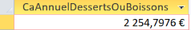
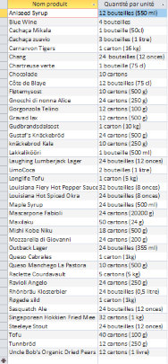
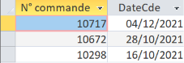

CONCEPTION – INTERROGATION D’UNE BASE DE DONNEES
Requête 3 Chiffre d'affaire
généré (montant total des ventes) annuel pour les catégories desserts ou boissons.
Réflexion en lien avec la santé

f. Quels sont les produits conditionnés dans du carton ou dans du verre ?

g. Donner les 3 dernières commandes du client Max Deschamps.

Proposition d'indicateur pertinent pour KDou. Reflexion en lien avec l'empreinte carbonne